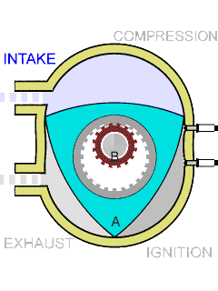

Motor Wankel - é um motor rotativo de combustão interna, inventado por Felix Wankel, que utiliza rotores com formato semelhante ao de um triângulo em vez dos pistões dos motores alternativos convencionais.
Wankel concebeu seu motor rotativo por volta de 1924 e obteve sua primeira carta patente em 1933. Durante a década de 1940, dedicou-se a melhorar o seu projeto. Ainda nas décadas de 1950 e 1960, houve um esforço considerável no desenvolvimento de motores rotativos. Eram particularmente interessantes por funcionar de um modo suave e silencioso, devido à simplicidade de seu mecanismo, e também pelo número reduzido de peças, comparado com os motores alternativos a pistão.

* Todo texto deste site foi retirado da publicação que segue este endereço: Motor Wankel (Wikipédia)